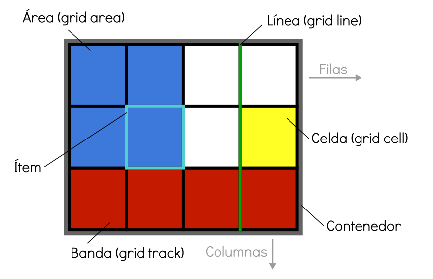

Este sitio web pretende explicar los temas de etiquetas semanticas y CSS Grid las cuales se aplican al
diseño de pajinas web,
para esto en su propio diseño, se utulizaran de estas herramientas, como tambien se agregaran actividades,
lecturas, iformacion didactica, todo con
el fin de explicar de la mejor manera este contenido.
Etiquetas Semanticas
Las etiquetas semánticas ayudan a definir la estructura del documento y permiten que las páginas web
sean mejor indexadas por los buscadores. Una etiqueta se califica como semántica si tiene que ver el
significado,
es decir, si nos informa sobre lo que trata su contenido. Por ejemplo, la etiqueta SECTION nos dice que
contiene
una sección o capítulo dentro de la página. Frente a las etiquetas semánticas tenemos otros tipos de
etiquetas
como las que afectan al formato, como UL, a multimedia, como VIDEO, etc.
El esquema de una página con etiquetas semánticas podría ser el siguiente.
Aulaclic.(2015).Nuvas etiquetas semanticas.Recuperado
de: https://www.aulaclic.es/articulos/html5-semantica_1.html
CSS GRid
CSS Grid es un modelo de maquetación CSS en base a una rejilla,
algo que podría no parecer tan novedoso, si tenemos en cuenta que diversas librerías de CSS lo habían intentado ya.
Sistemas como 960 Grid System fueron pioneros en crear una base de código CSS para que los diseñadores
pudieran posicionar los elementos en una distribución de filas y columnas. El propio Bootstrap incluye entre otras cosas
un sistema de rejilla. Al final, estos sistemas funcionaron pero tenían varios problemas:
Agregaban peso al CSS, con código de cientos de clases que muchas veces ni siquiera llegabas a usar.
Habia que aplicar constantemente clases y nombre que ensuciaban mucho el HTML.
Creaba código de muy difícil mantenimiento, haciendo que el proyecto estuviera ligado de manera muy directa
con un sistema propietario. Sin embargo, ahora Grid es un estándar y no es necesario recargar ni ensuciar el código
para aplicarlo. Todo se aplica directamente desde el CSS, por medio de nuevos atributos, valores y unidades con una variada sintaxis.
Además, un sitio con Grid resulta sencillo de mantener y de aplicar otras herramientas de CSS3 como las mediaqueries, y, por supuesto,
es totalmente adaptable a los dispositivos (responsive).
Al ser una especificación estable, estándar y soportada por prácticamente todos los navegadores modernos (y si no, siempre podemos
utilizar los polyfills) se considera realmente CSS, por lo que se puede utilizar en todos los sitios donde ya se utilice
código CSS: sitios estáticos, programación con un lenguaje determinado, un framework o para cualquier tipo de dispositivos
(escritorio, móviles, tablets) o webapps.

Asys.(2018)Que es CSS Grid.Recuperado de: https://www.arsys.es/blog/programacion/css-grid-layout/